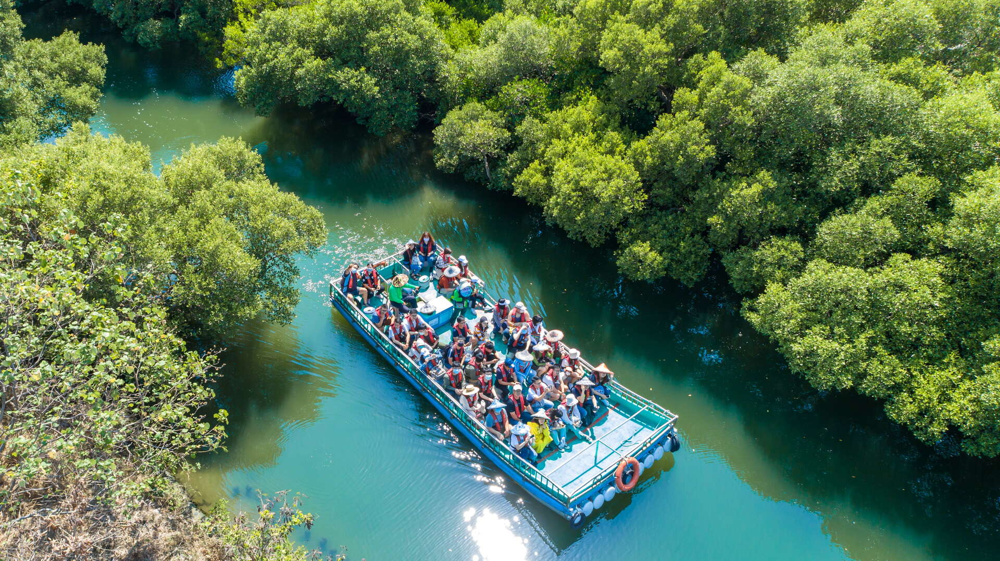

四草綠色隧道
四草綠色隧道在台江國家公園內，裡面有溼地及豐富的生態資源，可以坐船遊覽由 紅樹林交織成的綠色隧道，潮間帶的招潮蟹、彈塗魚與紅樹林，體會不一樣的大自然感受。
台南孔廟-全臺首學
「全臺首學」臺灣的第一座孔子廟 臺南孔子廟創建於明永曆19年（1665年），當時稱為「先師聖廟」，至今已有三百多年的歷史， 由島上第一個漢人政權鄭氏王朝所創立，為的是在臺開辦教育，培養為國效命的人才。 清領時期亦延續功能，為臺灣官辦的最高學府「臺灣府學」所在地。直到今日， 孔廟依然是讀書人的聖廟，有著崇高的地位。
井仔腳瓦盤鹽田
井仔腳瓦盤鹽田是北門的第一座鹽田，西元1818年開始曬鹽，因人工成本過高，在 2002年停止曬鹽，鹽田漸漸荒廢，目前開發為觀光景點，遊客在此可體驗傳統曬鹽、挑 鹽與收鹽。
赤崁樓
1653年為當時進佔臺灣南部之荷人所建，最初稱為「普羅民遮城」，與安平的「熱蘭遮城」 遙遙相對，互為犄角。熱蘭遮城作為荷蘭總督統治中樞，普羅民遮城則作為行政及商業中心。